Order of a reaction can be inferred from a graph of concentration of a reactant versus time
Order needs to be inferred by EXPERIMENTAL DATA, not by equation
Concentration of a reactant as a function of time
If reactant is:
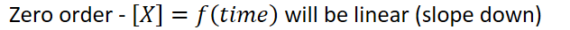{width="6.583333333333333in" height="0.3541666666666667in"}
{width="6.6875in" height="0.3541666666666667in"}
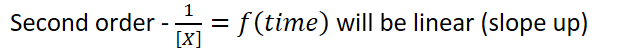{width="6.583333333333333in" height="0.5208333333333334in"}
Units for K will be:
| Zero order | 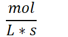{width="1.1979166666666667in" height="0.65625in"} |
|---|---|
| First order | 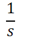{width="0.8125in" height="0.65625in"} |
| Second order | 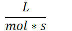{width="1.5104166666666667in" height="0.65625in"} |
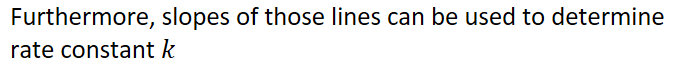{width="7.0625in" height="0.6875in"}
Zero order:
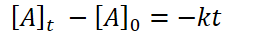{width="2.8645833333333335in" height="0.3333333333333333in"}
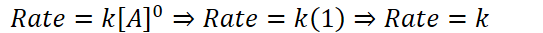{width="5.65625in" height="0.34375in"}
{width="5.447916666666667in" height="0.3541666666666667in"}
First order:
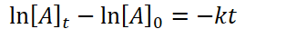{width="3.2708333333333335in" height="0.3333333333333333in"}
{width="5.697916666666667in" height="0.3541666666666667in"}
Second order:
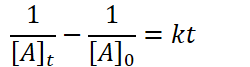{width="2.6041666666666665in" height="0.6979166666666666in"}
{width="5.125in" height="0.5208333333333334in"}
Half-life
Half-life is a critical parameter for first order reactions:
Half-life is constant
Related to the rate constant (k) by:
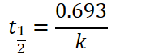{width="1.9270833333333333in" height="0.6979166666666666in"}
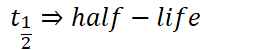{width="2.6458333333333335in" height="0.5208333333333334in"}
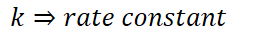{width="2.9166666666666665in" height="0.3333333333333333in"}
Radioactive decay provides an important illustration of first-order kinetics
Half-life: the time taken for a given quantity of a substance to halve its original amount
Half-life reactions are always first order